Feedback Favors the Generalization of
Neural ODEs
Abstract
The well-known generalization problem hinders the application of artificial neural networks in continuous-time prediction tasks with varying latent dynamics. In sharp contrast, biological systems can neatly adapt to evolving environments benefiting from real-time feedback mechanisms. Inspired by the feedback philosophy, we present feedback neural networks, showing that a feedback loop can flexibly correct the learned latent dynamics of neural ordinary differential equations (neural ODEs), leading to a prominent generalization improvement. The feedback neural network is a novel two-DOF neural network, which possesses robust performance in unseen scenarios with no loss of accuracy performance on previous tasks. A linear feedback form is presented to correct the learned latent dynamics firstly, with a convergence guarantee. Then, domain randomization is utilized to learn a nonlinear neural feedback form. Finally, extensive tests including trajectory prediction of a real irregular object and model predictive control of a quadrotor with various uncertainties, are implemented, indicating significant improvements over state-of-the-art model-based and learning-based methods333The project codes will be made available upon publication..
1 Introduction
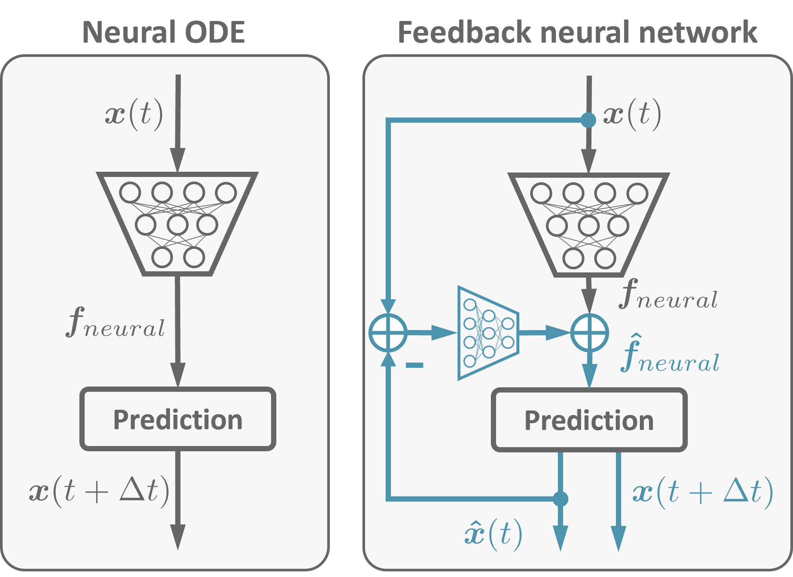
Stemming from residual neural networks (He et al., 2016), neural ordinary differential equation (neural ODE) (Chen et al., 2018) emerges as a novel learning strategy aiming at learning the latent dynamic model of an unknown system. Recently, neural ODEs have been successfully applied to various scenarios, especially continuous-time missions (Liu & Stacey, 2024; Verma et al., 2024; Greydanus et al., 2019; Cranmer et al., 2020). However, like traditional neural networks, the generalization problem limits the application of neural ODEs in real-world applications.
Traditional strategies like model simplification, fit coarsening, data augmentation, and transfer learning have considerably improved the generalization performance of neural networks on unseen tasks (Rohlfs, 2022). However, these strategies usually reduce the accuracy performance on previous tasks, and large-scale training data and network structures are often required to approximate previous accuracy. The objective of this work is to develop a novel network architecture, acquiring the generalization improvement while preserving the accuracy performance.
Living beings can neatly adapt to unseen environments, even with limited neurons and computing power. One reason can be attributed to the existence of internal feedback (Aoki et al., 2019). Internal feedback has been shown to exist in biological control, perception, and communication systems, handling external disturbances, internal uncertainties, and noises (Sarma et al., 2022; Markov et al., 2021). In neural circuits, feedback inhibition is able to regulate the duration and magnitude of excitatory signals (Luo, 2021). In engineering systems, internal feedback indicates impressive effects across filtering and control tasks, such as Kalman filter (Kalman, 1960), Luenberger observer (Luenberger, 1966), extended state observer (Guo et al., 2020), and proportional-integral-derivative control (Ang et al., 2005). The effectiveness of feedback lies in its ability to harness real-time deviations between internal predictions/estimations and external measurements to infer dynamical uncertainties. The cognitive corrections are then performed timely. However, existing neural networks rarely incorporate such a real-time feedback mechanism.
In this work, we attempt to enhance the generalization of neural ODEs by incorporating the feedback scheme. The key idea is to correct the learned latent dynamical model of a Neural ODE according to the deviation between measured and predicted states, as illustrated in Figure 1. We introduce two types of feedback: linear form and nonlinear neural form. Unlike previous training methods that compromise accuracy for generalization, the developed feedback neural network is a two-DOF framework that exhibits generalization performance on unseen tasks while maintaining accuracy on previous tasks. The effectiveness of the presented feedback neural network is demonstrated through several intuitional and practical examples, including trajectory prediction of a spiral curve, trajectory prediction of an irregular object and model predictive control (MPC) of a quadrotor.
2 Neural ODEs and learning residues
A significant application of artificial neural networks␣centers around the prediction task., . Note that indicates the input evolves with time. Chen et al. (2018) utilize neural networks to directly learn latent ODEs of target systems, named Neural ODEs. Neural ODEs greatly improve the modeling ability of neural networks, especially for continuous-time dynamic systems (Massaroli et al., 2020), while maintaining a constant memory cost. The ODE describes the instantaneous change of a state
| (1) |
where represents a latent nonlinear mapping, and denotes external input. Note that compared with Chen et al. (2018), we further consider that can extend the ODE to non-autonomous cases. The adjoint sensitive method is employed in Chen et al. (2018) to train neural ODEs without considering . In Appendix A.1, we provide an alternative training strategy in the presence of , from the view of optimal control.
Given the ODE (1) and an initial state , future state can be predicted as an initial value problem
| (2) |
The workflow of neural ODEs is depicted in Figure 1. However, like traditional learning methods, generalization is a major bottleneck for neural ODEs (Marion, 2024). Learning residuals will appear if the network has not been trained properly (e.g., underfitting and overfitting) or the applied scenario has a slightly different latent dynamic model. Take a spiral function as an example (Appendix A.3.1). When a network trained from a given training set (Figure 5 (a)) is transferred to a new case (Figure 5 (b)), the learning performance will dramatically degrade (Figure 5 (d)). Without loss of generality, the learning residual error is formalized as
| (3) |
where represents the learned ODE model parameterized by , and denotes the unknown learning residual error. In the presence of , the prediction error of (2) will accumulate over time. The objective of this work is to improve neural ODEs with as few modifications as possible to suppress the effects of .
3 Neural ODEs with a linear feedback
3.1 Correcting latent dynamics through feedback
Even though learned experiences are encoded by neurons in the brain, living organisms can still adeptly handle unexpected internal and external disturbances with the assistance of feedback mechanisms (Aoki et al., 2019; Sarma et al., 2022). The feedback scheme has also proven effective in traditional control systems, facilitating high-performance estimation and control objectives. Examples include Kalman filter (Kalman, 1960), Luenberger observer (Luenberger, 1966), extended state observer (Guo et al., 2020), and proportional-integral-derivative control (Ang et al., 2005).
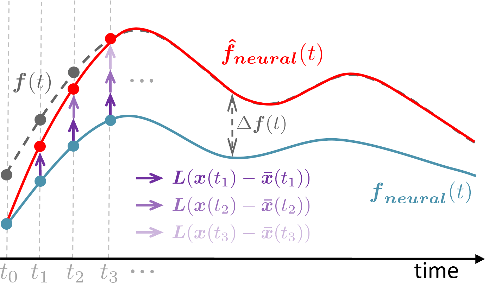
We attempt to introduce the feedback scheme into neural ODEs, named feedback neural networks, as shown in Figure 1. Neural ODEs have exploited latent dynamical models of target systems in training set. The key idea of feedback neural networks is to further correct according to state feedback. Denote as the historical evaluation moment satisfying . At current moment , we collect historical state measurements , in which . As portrayed in Figure 2, is modified by historical evaluation errors to approach the truth dynamics , i.e.,
| (4) |
where represents the positive definite gain and represents the predicted state from the last evaluation moment, e.g., an Euler integration
| (5) |
with the prediction step .
To avoid storing more and more historical measurements over time, define an auxiliary variable
| (6) |
where can be regarded as an estimation of . Combining (4) and (6), can lead to
| (7) |
From (5) and (6), it can be further rendered that
| (8) |
By continuating the above Euler integration, it can be seen that is the continuous state of the modified dynamics, i.e., . Finally, can be persistently obtained through (7) and (8) recursively, instead of (4) and (5) accumulatively.
3.2 Convergence analysis
In this part, the convergence property of the feedback neural network is analyzed. The state observation error of the feedback neural network is defined as , and its derivative , i.e., the approximated error of latent dynamics is defied as . Substitute (1) and (3) into (7), one can obtain the error dynamics
| (9) |
Before proceeding, a reasonable bounded assumption on the learning residual error is made.
Assumption 1.
There exists an unknown upper bound such that
| (10) |
where denotes the Euclidean norm and is an unknown positive value.
Then the following convergence theorem can be established.
Theorem 1.
Proof.
See Appendix A.2. ∎
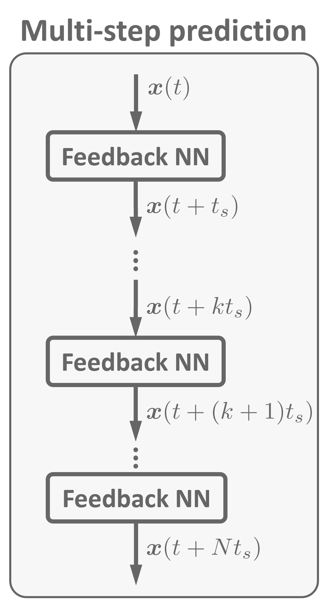
3.3 Multi-step prediction
With the modified dynamics and current , the next step is to predict as in (2). By defining , from (8), we have . One intuitional means to obtain is to solve the ODE problem with modern solvers. However, as shown in Theorem 1, the convergence of can only be guaranteed as current . In other words, the one-step prediction result by solving the above ODE is accurate, while the error will accumulate in the long-term prediction. In this part, an alternative multi-step prediction strategy is developed to circumvent this problem.
The proposed multi-step prediction strategy is portrayed in Figure 3, which can be regarded as a cascaded form of one-step prediction. The output of each feedback neural network is regarded as the input of the next layer. Take the first two layers as an example. The first-step prediction is obtained by . The second layer with the input of will output . In such a framework, the convergence of later layers will not affect the convergence of previous layers. Thus, the prediction error will converge from top to bottom in order.
Note that the cascaded prediction strategy can amplify the data noise in case of large . A gain decay strategy is designed to alleviate this issue. Denote the feedback gain of -th later as , which decays as increases
| (11) |
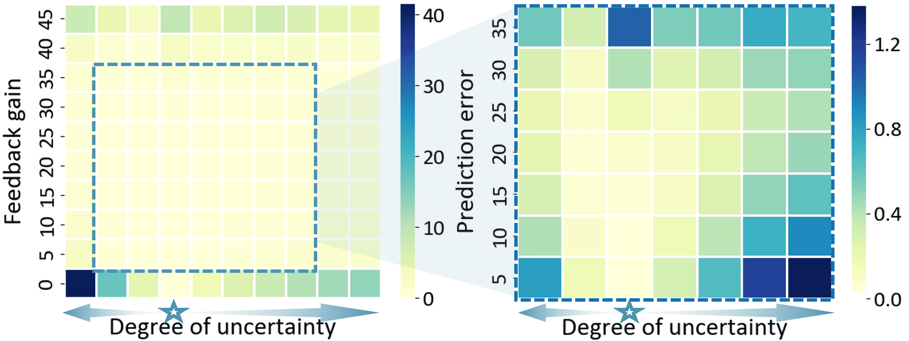
where represents the decay rate. The efficiency of the decay strategy is presented in Figure 5(g). The involvement of the decay factor in the multi-step prediction process significantly enhances the robustness to data noise.
3.4 Gain adjustment
The adjustment of linear feedback gain can be separated from the training of neural ODEs, which can increase the flexibility of the structure. In other words, the feedback loop can be easily embedded into existing trained neural ODEs, without retraining.
The gain adjustment strategy is intuitional. Theorem 1 indicates that the prediction error will converge to a bounded set as the minimum eigenvalue of feedback gain is greater than . And the converged set can shrink with the increase of the minimum eigenvalue. In reality, the amplitude of is limited since the feedback is usually noised. The manual adjustment of needs the trade-off between prediction accuracy and noise amplification.
Figure 4 shows the multi-step prediction errors ( = 50) with different levels of feedback gains and uncertainties. When the gain is set as , the feedback neural network will equal the neural ODE. The related simulation setup is detailed in Appendix A.3.4. Two phenomena can be observed from the heatmap. The one is that the prediction error increases with the level of uncertainty. The other is that the prediction error decreases with the gain at the beginning, but due to noise amplification, the prediction error worsens if the gain is set too large.
4 Neural ODEs with a neural feedback
Section 3 has shown a linear feedback form can promptly improve the adaptability of neural ODEs in unseen scenarios. However, two improvements could be further made. At first, it will be more practical if the gain tuning procedure could be avoided. Moreover, the linear feedback form can be extended to a nonlinear one to adopt more intricate scenes, as experienced in the control field (Han, 2009).
An effectual solution is to model the feedback part using another neural network, i.e., parameterized by . Here we design a separate learning strategy to learn . At first, the neural ODE is trained on the nominal task without considering the feedback part. Then the feedback part is trained through domain randomization by freezing the neural ODE. In this way, the obtained feedback neural network is skillfully considered as a two-DOF network. On the one hand, the original neural ODE preserves the accuracy on the previous nominal task. On the other hand, with the aid of feedback, the generalization performance is available in the presence of unknown uncertainties.
4.1 Domain randomization
The key idea of domain randomization (Tobin et al., 2017; Peng et al., 2018) is to randomize the system parameters, noises, and perturbations as collecting training data so that the real applied case can be covered as much as possible. Taking the spiral example as an example (Figure 5 (a)), training with domain randomization requires datasets collected under various periods, decay rates, and bias parameters, so that the learned networks are robust to the real case with a certain of uncertainty.
Two shortcomings exist when employing domain randomization. On the one hand, the existing trained network needs to be retrained and the computation burden of training is dramatically increased. On the other hand, the training objective is forced to focus on the average performance among different parameters, such that the prediction ability on the previous nominal task will degraded, as shown in Figure 6 (a). To maintain the previous accuracy performance, larger-scale network designs are often required. In other words, the domain randomization trades precision for robustness. In the proposed learning strategy, the generalization ability is endowed to the feedback loop independently, so that the above shortcomings can be circumvented.
4.2 Learning a neural feedback
In this work, we specialize the virtue from domain randomization to the feedback part rather than the previous neural network . The training framework is formalized as follows
| (12) |
where denotes the number of randomized cases, denotes the training set of the -th case with samples, denotes the labeled sate, and denotes one-step prediction of state, which is approximated by Euler integration method here.
The learning procedure of the feedback part is summarized as Algorithm 1. After training the neural ODE on the nominal task, the parameters of simulation model are randomized to produce cases. Subsequently, the feedback neural network is implemented in these cases and the training set of each case is constructed. The training loss is then calculated through (4.2), which favors the update of parameter by backpropagation. The above steps are repeated until the expected training loss is achieved or the maximum number of iterations was reached.
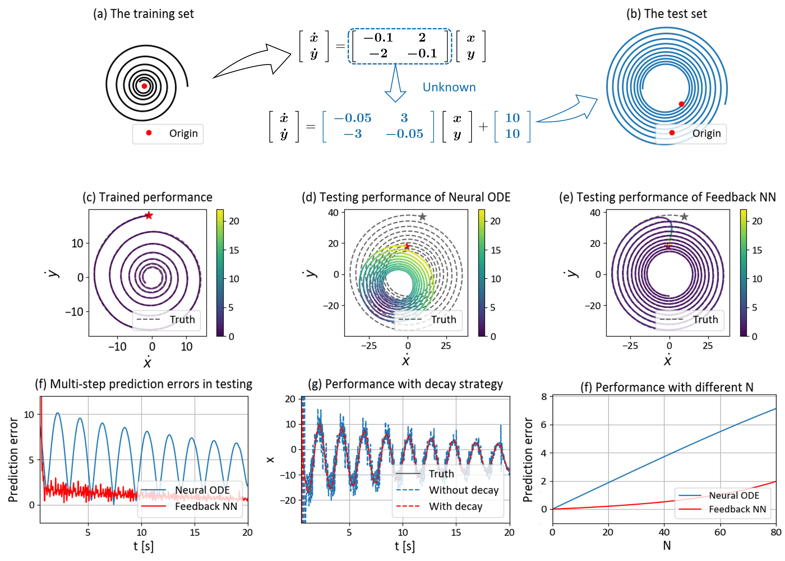
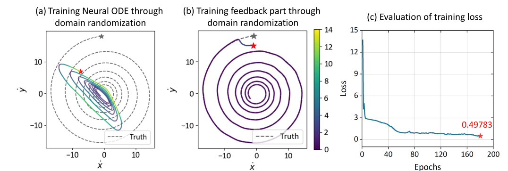
For the spiral example, Figure 6 (b) presents the learning performance of the feedback neural network on the nominal task. It can be seen that the feedback neural network can precisely capture the latent dynamics, maintaining the previous accuracy performance of Figure 5 (c). Moreover, the feedback neural network also has the generalization performance on randomized cases, as shown in Appendix Figure S1. Figure 6 (c) further provides the evolution of training loss of the feedback part on the spiral example. More training details are provided in Appendix A.3.3.
5 Empirical study
5.1 Trajectory prediction of an irregular object
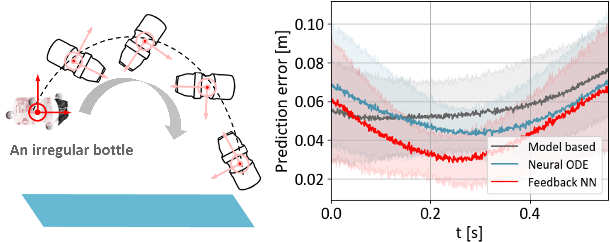
Precise trajectory prediction of a free-flying irregular object is a challenging task due to the complicated aerodynamic effects. Previous methods can be mainly classified into model-based scheme (Frese et al., 2001; Müller et al., 2011; Bouffard et al., 2012) and learning-based scheme (Kim et al., 2014; Yu et al., 2021). With historical data, model-based methods aim at accurately fitting the drag coefficient of an analytical drag model, while learning-based ones try to directly learn an acceleration model using specific basis functions. However, the above methods lack of online adaptive ability as employing. Benefiting from the feedback mechanism, our feedback neural network can correct the learned model in real time, leading to a more generalized performance in cases out of training datasets.
We test the effectiveness of the proposed method on an open-source dataset (Jia et al., 2024), in comparison with the model-based method (Frese et al., 2001; Müller et al., 2011; Bouffard et al., 2012) and the learning-based method (Chen et al., 2018). The objective of this mission is to accurately predict the object’s position after , as it is thrown by hand. trajectories are used for training, while trajectories are used for testing. The prediction result is presented in Figure 7. It can be seen that the proposed feedback neural network achieves the best prediction performance. Moreover, the predicted positions and learned latent accelerations of all test trajectories are provided in Figure S2 and Figure S3, respectively. Implementation details are provided in Appendix A.4.
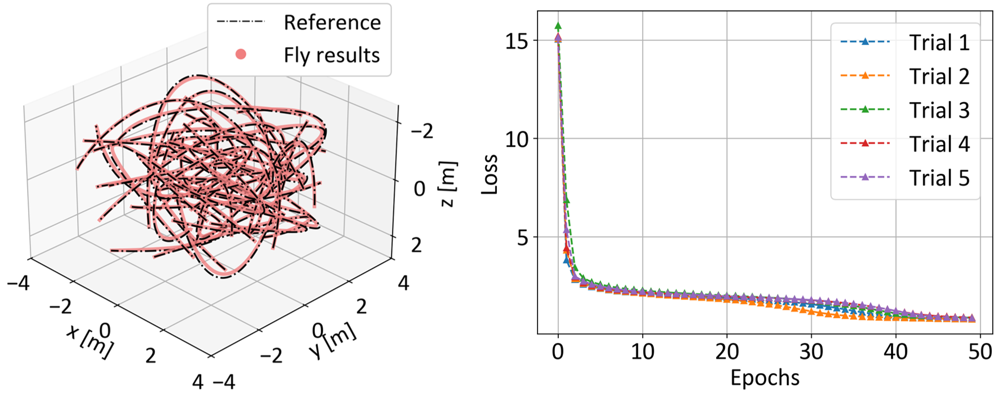
5.2 Model predictive control of a quadrotor
MPC works in the form of receding-horizon trajectory optimizations with a dynamic model, and then determines the current optimal control input. Approving optimization results highly rely on accurate dynamical models. Befitting from the powerful representation capability of neural networks for complex real-world physics, noticeable works (Torrente et al., 2021; Salzmann et al., 2023; Sukhija et al., 2023) have demonstrated that models incorporating first principles with learning-based components can enhance control performance. However, as the above models are offline-learned within fixed environments, the control performance would degrade under uncertainties in unseen environments.
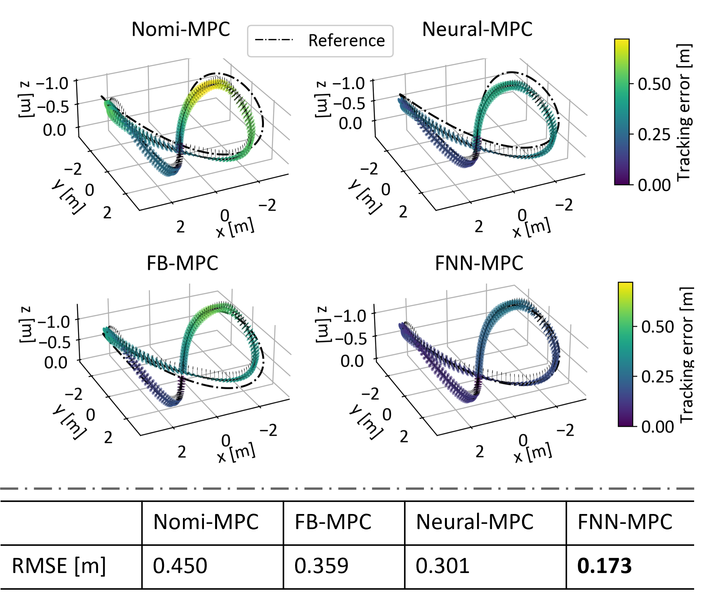
In this part, the proposed feedback neural network is employed on the quadrotor trajectory tracking scenario concerning model uncertainties and external disturbances, to demonstrate its online adaptive capability. In offline training, a neural ODE is augmented with the nominal dynamics firstly to account for aerodynamic residuals. The augmented model is then integrated with an MPC controller. Note that parameter uncertainties of mass, inertia, and aerodynamic coefficients, and external disturbances are all applied in tests, despite the neural ODE only capture aerodynamic residuals in training. For the feedback neural network, the proposed multi-step prediction strategy is embedded into the model prediction process in MPC. Therefore, the formed feedback-enhanced hybrid model can effectively improve prediction results, further leading to a precise tracking performance. More implementation details refer to Appendix A.5.3.
5.2.1 Learning aerodynamic effects
While learning the dynamics, the augmented model requires the participation of external control inputs, i.e., motor thrusts. Earning a quadrotor model augmented with a neural ODE could be tricky with end-to-end learning patterns since the open-loop model are intensively unstable, leading to the diverge of numerical integration. To address this problem, a baseline controller is applied to form a stable closed-loop system. As shown in Figure 8, the training trajectories are generated by randomly sampling positional waypoints in a limited space, followed by optimizing polynomials that connect these waypoints (Mellinger & Kumar, 2011). The adjoint sensitive method is employed in Chen et al. (2018) to train neural ODEs without considering external control inputs. We provide an alternative training strategy concerning external inputs in Appendix A.1, from the view of optimal control. trials of training are carried out, each with distinct initial values for network parameters. The trajectory validations are carried out using randomly generated trajectories (Figures S4-S7). More learning details refer to Appendix A.5.2.
5.2.2 Flight tests
In tests, MPC is implemented with four different models: the nominal model, the neural ODE augmented model, the feedback enhanced nominal model, and the feedback neural network augmented model, abbreviated as Nomi-MPC, Neural-MPC, FB-MPC, and FNN-MPC, for the sake of simplification. Moreover, mass uncertainty, inertia uncertainties, drag coefficient uncertainties, and translational disturbances are applied. The flight results on a Lissajous trajectory are presented in Figure 9. It can be seen the Neural-MPC outperforms the Nomi-MPC since intricate aerodynamic effects are captured by the neural ODE. However, due to the fact that unseen parameter uncertainties and external disturbances are not involved in training set, Neural-MPC still has considerable tracking errors. In contrast, FNN-MPC achieves the best tracking performance. The reason can be attributed to the multi-step prediction of the feedback neural network improves the prediction accuracy subject to multiple uncertainties, as shown in Figure S8.
6 Related work
6.1 Neural ODEs
Most dynamical systems can be described by ODEs. The establishments of ODEs rely on analytical physics laws and expert experiences previously. To avoid such laborious procedures, Chen et al. (2018) propose to approximate ODEs by directly using neural networks, named neural ODEs. The prevalent residual neural networks (He et al., 2016) can be regarded as an Euler discretization of neural ODEs Marion et al. (2024). The universal approximation property of neural ODEs has been studied theoretically (Zhang et al., 2020; Teshima et al., 2020; Li et al., 2022), which show the sup-universality for diffeomorphisms maps (Teshima et al., 2020) and -universality for general continuous maps (Li et al., 2022). Marion (2024) further provides the generalization bound (i.e., upper bound on the difference between the theoretical and empirical risks) for a wide range of parameterized ODEs.
Recently, plenty of neural ODE variants have been developed concerning different purposes. Considering the discrete and instantaneous changes in dynamics systems (e.g., a bouncing ball), neural ODEs can be extended by employing auxiliary neural event functions to model the switching moments (Chen et al., 2020). From the point of view of conservation, Hamiltonian neural networks are designed to learn the Hamiltonian of a dynamics system in an unsupervised way (Greydanus et al., 2019). However, canonical coordinates are needed for Hamiltonian neural networks. Lagrangian neural networks are subsequently developed to circumvent the requirement of canonical coordinates (Cranmer et al., 2020). Concerning dynamical systems modeled by integro-differential equations (e.g., brain activity), the neural networks employed in Zappala et al. (2023) can capture both Markovian and non-Markovian behaviors. Other variants include neural controlled differential equations (Kidger et al., 2020), neural stochastic differential equations (Oh et al., 2024), and characteristic neural ODEs Xu et al. (2023). Different from our feedback scheme, all of the above methods belong to the forward propagation mechanism.
6.2 Generalization of neural networks
In classification tasks, neural network models face the generalization problem across samples, distributions, domains, tasks, modalities, and scopes (Rohlfs, 2022). Plenty of empirical strategies have been developed to improve the generalization of neural networks, such as model simplification, fit coarsening, and data augmentation for sample generalization, identification of causal relationships for distribution generalization, and transfer learning for domain generalization. More details of these approaches on classification tasks can refer to Rohlfs (2022). Here, we mainly review state-of-the-art research related to continuous-time prediction missions.
Domain randomization (Tobin et al., 2017; Peng et al., 2018) has shown promising effects to improve the generalization for sim-to-real transfer applications, such as drone racing (Kaufmann et al., 2023), quadrupedal locomotion (Choi et al., 2023), and humanoid locomotion (Radosavovic et al., 2024). The key idea is to randomize the system parameters, noises, and perturbations in simulation so that the real-world case can be covered as much as possible. Although the system’s robustness can be improved through domain randomization, there are two costs to pay. One is that the computation burden in the training process is dramatically increased. The other is that the training result has a certain of conservativeness since the training performance is an average of different scenarios, instead of a specific case.
Recently, domain randomization has proven inadequate to cope with unexpected disturbances (Shi et al., 2024). An adversarial learning framework is formalized in Shi et al. (2024) to exploit sequential adversarial attacks for quadrupedal robots, and further utilize them to finetune previous reinforcement learning-based controllers. Brain-inspired neural networks have shown striking generalization performance in new environments with drastic changes (Chahine et al., 2023; Lechner et al., 2020), benefiting from its attention concentration feature. By incorporating symbolic knowledge, Wang et al. (2024) show the generalization of neural networks can be enhanced across different robot tasks.
All of the above strategies try to learn a powerful model for coping with diverse scenarios, which may be laborious and computationally intensive. In this work, it is shown that only a closed-loop feedback adjustment is sufficient to improve the generalization, without changing the original feedforward network structure or training algorithm. The proposed strategy is simple but efficient.
7 Conclusion
Inspired by the feedback philosophy in biological and engineering systems, we proposed to incorporate a feedback loop into the neural network structure for the first time, as far as we known. In such a way, the learned latent dynamics can be corrected flexibly according to real-time feedback, leading to better generalization performance in continuous-time missions. The convergence property under a linear feedback form was analyzed. Subsequently, domain randomization was employed to learn a nonlinear neural feedback, resulting in a two-DOF neural network. Finally, applications on trajectory prediction of irregular objects and MPC of robots were shown. Future work will pursue to test the proposed feedback neural network on more open-source datasets of continuous prediction missions.
Limitations.
As analyzed in Theorem 1, accurate prediction necessitates a convergence time. Specifically, the convergence time for multi-step prediction scales linearly with the prediction horizon. While experimental results on selected examples indicate that a satisfactory prediction performance can be attained after a short convergence period, future demonstrations across a broader range of cases, particularly those demanding transient performance, are necessary.
References
- Ang et al. (2005) Kiam Heong Ang, Gregory Chong, and Yun Li. PID control system analysis, design, and technology. IEEE Transactions on Control Systems Technology, 13(4):559–576, 2005.
- Aoki et al. (2019) Stephanie K Aoki, Gabriele Lillacci, Ankit Gupta, Armin Baumschlager, David Schweingruber, and Mustafa Khammash. A universal biomolecular integral feedback controller for robust perfect adaptation. Nature, 570(7762):533–537, 2019.
- Bouffard et al. (2012) Patrick Bouffard, Anil Aswani, and Claire Tomlin. Learning-based model predictive control on a quadrotor: Onboard implementation and experimental results. In Proceedings of IEEE International Conference on Robotics and Automation, pp. 279–284, 2012.
- Chahine et al. (2023) Makram Chahine, Ramin Hasani, Patrick Kao, Aaron Ray, Ryan Shubert, Mathias Lechner, Alexander Amini, and Daniela Rus. Robust flight navigation out of distribution with liquid neural networks. Science Robotics, 8(77):eadc8892, 2023.
- Chen et al. (2018) Ricky TQ Chen, Yulia Rubanova, Jesse Bettencourt, and David K Duvenaud. Neural ordinary differential equations. In Proceedings of Advances in Neural Information Processing Systems, volume 31, 2018.
- Chen et al. (2020) Ricky TQ Chen, Brandon Amos, and Maximilian Nickel. Learning neural event functions for ordinary differential equations. In Proceedings of Advances in Neural Information Processing Systems, 2020.
- Choi et al. (2023) Suyoung Choi, Gwanghyeon Ji, Jeongsoo Park, Hyeongjun Kim, Juhyeok Mun, Jeong Hyun Lee, and Jemin Hwangbo. Learning quadrupedal locomotion on deformable terrain. Science Robotics, 8(74):eade2256, 2023.
- Cranmer et al. (2020) Miles Cranmer, Sam Greydanus, Stephan Hoyer, Peter Battaglia, David Spergel, and Shirley Ho. Lagrangian neural networks. arXiv preprint arXiv:2003.04630, 2020.
- Faessler et al. (2017) Matthias Faessler, Antonio Franchi, and Davide Scaramuzza. Differential flatness of quadrotor dynamics subject to rotor drag for accurate tracking of high-speed trajectories. IEEE Robotics and Automation Letters, 3(2):620–626, 2017.
- Frese et al. (2001) U. Frese, B. Bauml, S. Haidacher, G. Schreiber, I. Schaefer, M. Hahnle, and G. Hirzinger. Off-the-shelf vision for a robotic ball catcher. In Proceedings of IEEE/RSJ International Conference on Intelligent Robots and Systems, pp. 1623–1629 vol.3, 2001.
- Greydanus et al. (2019) Samuel Greydanus, Misko Dzamba, and Jason Yosinski. Hamiltonian neural networks. In Proceedings of Advances in Neural Information Processing Systems, 2019.
- Guo et al. (2020) Kexin Guo, Jindou Jia, Xiang Yu, Lei Guo, and Lihua Xie. Multiple observers based anti-disturbance control for a quadrotor UAV against payload and wind disturbances. Control Engineering Practice, 102:104560, 2020.
- Han (2009) Jingqing Han. From PID to active disturbance rejection control. IEEE Transactions on Industrial Electronics, 56(3):900–906, 2009.
- He et al. (2016) Kaiming He, Xiangyu Zhang, Shaoqing Ren, and Jian Sun. Deep residual learning for image recognition. In Proceedings of IEEE Conference on Computer Vision and Pattern Recognition, pp. 770–778, 2016.
- Jia et al. (2024) Jindou Jia, Wenyu Zhang, Kexin Guo, Jianliang Wang, Xiang Yu, Yang Shi, and Lei Guo. EVOLVER: Online learning and prediction of disturbances for robot control. IEEE Transactions on Robotics, 40:382–402, 2024.
- Kalman (1960) Rudolph Emil Kalman. A new approach to linear filtering and prediction problems. 1960.
- Kaufmann et al. (2023) Elia Kaufmann, Leonard Bauersfeld, Antonio Loquercio, Matthias Müller, Vladlen Koltun, and Davide Scaramuzza. Champion-level drone racing using deep reinforcement learning. Nature, 620(7976):982–987, 2023.
- Kidger et al. (2020) Patrick Kidger, James Morrill, James Foster, and Terry Lyons. Neural controlled differential equations for irregular time series. In Proceedings of Advances in Neural Information Processing Systems, volume 33, pp. 6696–6707, 2020.
- Kim et al. (2014) Seungsu Kim, Ashwini Shukla, and Aude Billard. Catching objects in flight. IEEE Transactions on Robotics, 30(5):1049–1065, 2014.
- Lechner et al. (2020) Mathias Lechner, Ramin Hasani, Alexander Amini, Thomas A Henzinger, Daniela Rus, and Radu Grosu. Neural circuit policies enabling auditable autonomy. Nature Machine Intelligence, 2(10):642–652, 2020.
- Li et al. (2022) Qianxiao Li, Ting Lin, and Zuowei Shen. Deep learning via dynamical systems: An approximation perspective. Journal of the European Mathematical Society, 25(5):1671–1709, 2022.
- Liu & Stacey (2024) Zefang Liu and Weston M. Stacey. Application of neural ordinary differential equations for tokamak plasma dynamics analysis. In ICLR 2024 Workshop on AI4DifferentialEquations In Science, 2024.
- Luenberger (1966) David Luenberger. Observers for multivariable systems. IEEE Transactions on Automatic Control, 11(2):190–197, 1966.
- Luo (2021) Liqun Luo. Architectures of neuronal circuits. Science, 373(6559):eabg7285, 2021.
- Marion (2024) Pierre Marion. Generalization bounds for neural ordinary differential equations and deep residual networks. In Proceedings of Advances in Neural Information Processing Systems, volume 36, 2024.
- Marion et al. (2024) Pierre Marion, Yu-Han Wu, Michael Eli Sander, and Gérard Biau. Implicit regularization of deep residual networks towards neural ODEs. In Proceedings of International Conference on Learning Representations, 2024.
- Markov et al. (2021) Daniil A Markov, Luigi Petrucco, Andreas M Kist, and Ruben Portugues. A cerebellar internal model calibrates a feedback controller involved in sensorimotor control. Nature Communications, 12(1):1–21, 2021.
- Massaroli et al. (2020) Stefano Massaroli, Michael Poli, Jinkyoo Park, Atsushi Yamashita, and Hajime Asama. Dissecting neural odes. In Proceedings of Advances in Neural Information Processing Systems, volume 33, pp. 3952–3963, 2020.
- Mellinger & Kumar (2011) Daniel Mellinger and Vijay Kumar. Minimum snap trajectory generation and control for quadrotors. In Proceedings of IEEE/RSJ International Conference on Robotics and Automation, pp. 2520–2525, 2011.
- Müller et al. (2011) Mark Müller, Sergei Lupashin, and Raffaello D’Andrea. Quadrocopter ball juggling. In Proceedings of IEEE/RSJ International Conference on Intelligent Robots and Systems, pp. 5113–5120, 2011.
- Oh et al. (2024) YongKyung Oh, Dongyoung Lim, and Sungil Kim. Stable neural stochastic differential equations in analyzing irregular time series data. In Proceedings of International Conference on Learning Representations, 2024.
- Peng et al. (2018) Xue Bin Peng, Marcin Andrychowicz, Wojciech Zaremba, and Pieter Abbeel. Sim-to-real transfer of robotic control with dynamics randomization. In Proceedings of IEEE International Conference on Robotics and Automation, pp. 3803–3810, 2018.
- Radosavovic et al. (2024) Ilija Radosavovic, Tete Xiao, Bike Zhang, Trevor Darrell, Jitendra Malik, and Koushil Sreenath. Real-world humanoid locomotion with reinforcement learning. Science Robotics, 9(89):eadi9579, 2024.
- Rohlfs (2022) Chris Rohlfs. Generalization in neural networks: a broad survey. arXiv preprint arXiv:2209.01610, 2022.
- Salzmann et al. (2023) Tim Salzmann, Elia Kaufmann, Jon Arrizabalaga, Marco Pavone, Davide Scaramuzza, and Markus Ryll. Real-time neural MPC: Deep learning model predictive control for quadrotors and agile robotic platforms. IEEE Robotics and Automation Letters, 8(4):2397–2404, 2023.
- Sarma et al. (2022) Anish A Sarma, Jing Shuang Lisa Li, Josefin Stenberg, Gwyneth Card, Elizabeth S Heckscher, Narayanan Kasthuri, Terrence Sejnowski, and John C Doyle. Internal feedback in biological control: Architectures and examples. In Proceedings of American Control Conference, pp. 456–461, 2022.
- Shi et al. (2024) Fan Shi, Chong Zhang, Takahiro Miki, Joonho Lee, Marco Hutter, and Stelian Coros. Rethinking robustness assessment: Adversarial attacks on learning-based quadrupedal locomotion controllers. In Proceedings of Robotics: Science and Systems, 2024.
- Slotine et al. (1991) Jean-Jacques E Slotine, Weiping Li, et al. Applied nonlinear control, volume 199. Prentice hall Englewood Cliffs, NJ, 1991.
- Sukhija et al. (2023) Bhavya Sukhija, Nathanael Köhler, Miguel Zamora, Simon Zimmermann, Sebastian Curi, Andreas Krause, and Stelian Coros. Gradient-based trajectory optimization with learned dynamics. In Proceedings of IEEE International Conference on Robotics and Automation, pp. 1011–1018, 2023.
- Teshima et al. (2020) Takeshi Teshima, Koichi Tojo, Masahiro Ikeda, Isao Ishikawa, and Kenta Oono. Universal approximation property of neural ordinary differential equations. In NeurIPS 2020 workshop on Differential Geometry meets Deep Learning., 2020.
- Tobin et al. (2017) Josh Tobin, Rachel Fong, Alex Ray, Jonas Schneider, Wojciech Zaremba, and Pieter Abbeel. Domain randomization for transferring deep neural networks from simulation to the real world. In Proceedings of IEEE/RSJ International Conference on Intelligent Robots and Systems, pp. 23–30, 2017.
- Torrente et al. (2021) Guillem Torrente, Elia Kaufmann, Philipp Föhn, and Davide Scaramuzza. Data-driven MPC for quadrotors. IEEE Robotics and Automation Letters, 6(2):3769–3776, 2021.
- Verma et al. (2024) Yogesh Verma, Markus Heinonen, and Vikas Garg. ClimODE: Climate and weather forecasting with physics-informed neural ODEs. In Proceedings of International Conference on Learning Representations, 2024.
- Wang et al. (2024) Chen Wang, Kaiyi Ji, Junyi Geng, Zhongqiang Ren, Taimeng Fu, Fan Yang, Yifan Guo, Haonan He, Xiangyu Chen, Zitong Zhan, et al. Imperative learning: A self-supervised neural-symbolic learning framework for robot autonomy. arXiv preprint arXiv:2406.16087, 2024.
- Xu et al. (2023) Xingzi Xu, Ali Hasan, Khalil Elkhalil, Jie Ding, and Vahid Tarokh. Characteristic neural ordinary differential equation. In Proceedings of International Conference on Learning Representations, 2023.
- Yu et al. (2021) Hongxiang Yu, Dashun Guo, Huan Yin, Anzhe Chen, Kechun Xu, Zexi Chen, Minhang Wang, Qimeng Tan, Yue Wang, and Rong Xiong. Neural motion prediction for in-flight uneven object catching. In Proceedings of IEEE/RSJ International Conference on Intelligent Robots and Systems, pp. 4662–4669, 2021.
- Zappala et al. (2023) Emanuele Zappala, Antonio H de O Fonseca, Andrew H Moberly, Michael J Higley, Chadi Abdallah, Jessica A Cardin, and David van Dijk. Neural integro-differential equations. In Proceedings of AAAI Conference on Artificial Intelligence, pp. 11104–11112, 2023.
- Zhang et al. (2020) Han Zhang, Xi Gao, Jacob Unterman, and Tom Arodz. Approximation capabilities of neural ODEs and invertible residual networks. In Proceedings of International Conference on Machine Learning, pp. 11086–11095, 2020.
Appendix A Appendix
A.1 Training neural ODEs with external inputs
Firstly, we formulate the learning problem as an optimization problem:
| (13) | |||
| (14) |
where and denotes the model rollout state and the real sample at time respectively, refers to the discretized integration of with fixed discrete step since real-world state trajectories are sequentially recorded with fixed timestep based on the onboard working frequency. , are defined to quantify the state differences between model rollout and real-world state . In this article, we select the functions in a weighted quadratic form, i.e., .
By utilizing the optimal control theory and variational method, the first-order optimality conditions of the learning problem could be derived as
| (15) | |||
| (16) | |||
| (17) | |||
| (18) |
where stands for the Hamiltonian of this problem. Solving (18) could be done by applying gradient descent on . The gradient is analytic and available (summarized in Algorithm 2) by sequentially doing forward rollout (16) of and backward rollout (17) of , where the latter one is also known as the term adjoint solve or reverse-mode differentiation.
The gradient computing only supports for a single continuous state trajectory, and the computational complexity scales linearly with the trajectory length. However, in real-world applications, multiple trajectory segments with a long horizon might be produced. We introduce mini-batching as well as stochastic optimization methods to deal with the drawback, as summarized in Algorithm 3. The learning rate could be determined using Adam or other stochastic gradient descent-related methods.
A.2 Proof of Theorem 1
The proof procedure requires the Lyapunov stability analysis arising from the traditional control field (Slotine et al., 1991). At first, define a Lyapunov function
| (19) |
Differentiate , yielding
| (20) |
where and are driven by substituting (9) and (10), respectively. By combing (19) and (A.2), it can be rendered that
| (21) |
By solving the first-order ordinary differential inequality, one can achieve
| (22) |
with . It can be further implied that
| (23) |
which shows that even with learning residuals, the state observation error can converge to a bounded set with the feedback modification. It can be seen that the upper bound can be regulated to arbitrarily small by increasing .
Finally, from (9), it can be concluded that the derivative of the state observation error can also converge to a bounded set, i.e.,
| (24) |
with the maximum eigenvalue of feedback gain .
A.3 Implementation details of spiral case
A.3.1 Spiral dynamics
The adopted spiral model is formalized as
| (29) |
with period , decay rate , and bias .
In tests, the initial value is set as . For the nominal task, , , and are set as , , and , respectively.
A.3.2 Training details of neural ODE
The adopted MLP for training ODE has layers with hidden units and ReLU activation functions. The training datasets consist of samples, discretized from to with step size. In training, we use RMSprop optimizer with the default learning rate of . The network is trained with a batch size of for iterations.
A.3.3 Training details of feedback part
As for the feedback part, we adopt MLP with hidden layers with hidden units each and ReLU activation functions. The training datasets are collected through domain randomization, with randomized cases, i.e., , , . Each case consists of samples, discretized from to with step size. In training, we use RMSprop optimizer with the learning rate of . The network is trained with a batch size of for iterations.
A.3.4 Setup of gain adjustment test
Figure 4 shows the ablation study on linear feedback gain and degree of uncertainty. In this test, feedback gain is selected from in order, and uncertainties are set as , , in order. The prediction step is set as . The prediction results are evaluated using the means of - prediction errors.
A.4 Implementation details of trajectory prediction of irregular objects
The input state of neural ODE consists of position and velocity. The adopted MLP for training latent ODE has hidden layers with hidden units each and ReLU activation functions. The training datasets consist of trajectories, with samples each. The step size is . In training, we use Adam optimizer with the default learning rate of . The network is trained with a batch size of for iterations.
Different from the one-step prediction strategy utilized in Jia et al. (2024) (modeled as non-autonomous systems concerning attitude), this work predicts future states in a forward-rolling way, learning a more precise result. For the compared drag model-based method, the drag coefficient comes from Jia et al. (2024) fitted by least squares. The prediction error in Figure 7 is evaluated by the - of position prediction error.
A.5 Implementation details of model predictive control of a quadrotor
A.5.1 Quadrotor Preliminaries
A quadrotor dynamics can be defined as a state-space model with a -dimensional state vector and a -dimensional input vector of motor thrusts. Two coordinate systems are defined, the earth-fixed frame and the body-fixed frame . The position and the velocity are defined in while the body rate is defined in . The relationship between and is decided by the Euler angle . The translational and rotational dynamics can be formalized as
| (30) | ||||
where stands for the magnitude of gravitational acceleration, refers to the rotational mapping matrix of Euler angle dynamics and is the control allocation matrix. We note the nominal dynamics of quadrotor as .
Next, differential flatness-based controller (DFBC) (Mellinger & Kumar, 2011) for the quadrotor is introduced, which is adopted here to form a closed-loop system for end-to-end learning that remains stable and differentiable numerical integration. By receiving the flat outputs , the positional signal and its higher-order derivatives, as the command signal, DFBC computes the desired motor thrusts for the actuators under the -dimensional state feedback. By virtue of the differential flatness property of the quadrotor, one can covert the flat outputs into nominal states and inputs using related differential flatness mappings if the yaw motion remains zero. We note this controller as , where is auxiliary state of controller for the expression integrators and approximated derivatives in the rotational controller.
A.5.2 Implemention of learning aerodynamics effects
In training, the aerodynamic drag can be modeled as (Faessler et al., 2017), where refers to the current rotational matrix that map the frame to the frame , and is a coefficient matrix.
A neural ODE (with parameters ) is augmented with the nominal dynamics to capture the aerodynamic effect, i.e., . A MLP with hidden layers with hidden units is adopted.
End-to-end learning of could be done using the algorithm 3, but a stable numerical integration is necessary. A closed-loop system of the augmented dynamics using DFBC is employed, noted as . In the proposed algorithm, turns out to be the new state and becomes the auxiliary input instead of the input of the augmented dynamics .
We generate trajectories with the discrete nodes of each for learning by randomly sampling the positional waypoints in a limited space, followed by optimizing polynomials that connect these waypoints, as shown in Figure 8. For validations of the learned neural ODE, we generate another random trajectories longer than that used in training, the result illustrated in Figures S4-S7 indicates a good prediction on all states.
A.5.3 Implementation of MPC with Feedback Neural Networks
MPC works in the form of trajectory optimization (31) with receding-horizon with a discrete dynamic model , to obtain the current optimal control input , while maintaining feasibility constraints , i.e.,
| (31) | ||||
where the objective functions penalize the tracking error between model predicted trajectory and the up-comming reference trajectory , where quadratic loss are often adopted. In this application, we make , , where and . The feasibility constraints and are normally designed using box constraints. We make to avoid control saturation and to avoid singularities while using Euler angle-based attitude representation. The receding horizon length is set to be .
The key idea of using a feedback neural network augmented model is to apply the multi-step prediction mechanism to the model prediction process in MPC. The multi-step prediction algorithm requires the current feedback state and current input to update the sequence of . The updated can be directly applied for the receding horizon optimization of the next state. We choose a linear feedback gain of with a decay rate of .
A.5.4 Test results
A periodic Lissajous trajectory is used for comparative tests, where a variety of attitude-velocity combination is exploited. The position trajectory can be written as , where the parameters are . Tracking such trajectory requires a conversion of the flat outputs to the nominal -dimensional state of the quadrotor using differential flatness-based mapping.
During trajectory tracking, it could be seen from Figure S8 that the prediction accuracy of latent dynamics at the first step is improved significantly under the multi-step prediction. Although the learning-based model provides more solid results on dynamics prediction than just using the nominal model, with the help of feedback, a convergence property of prediction error can be achieved, leading to a better tracking performance (Figure 9).
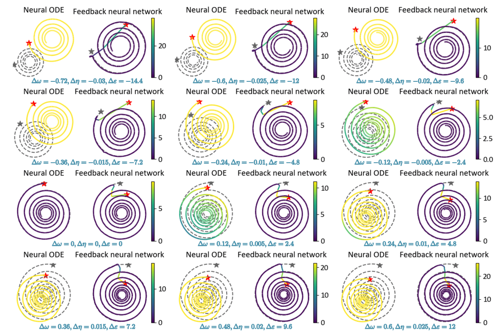
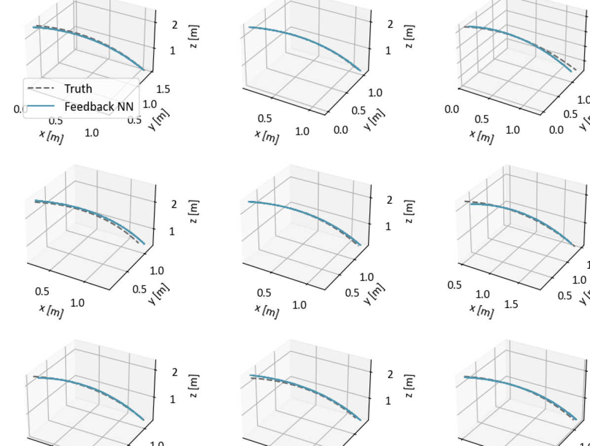
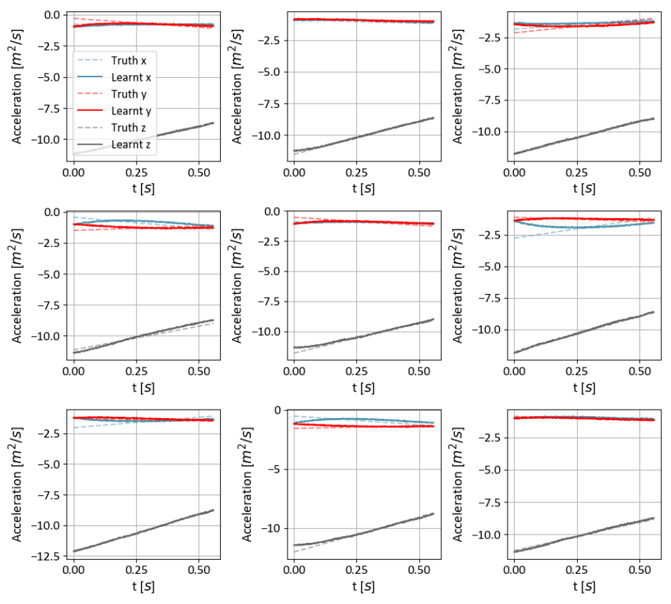
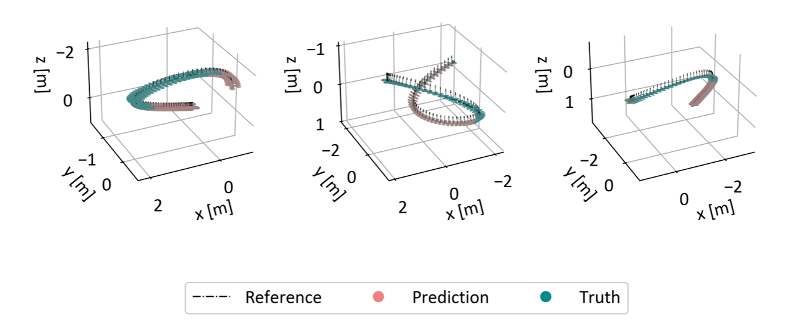
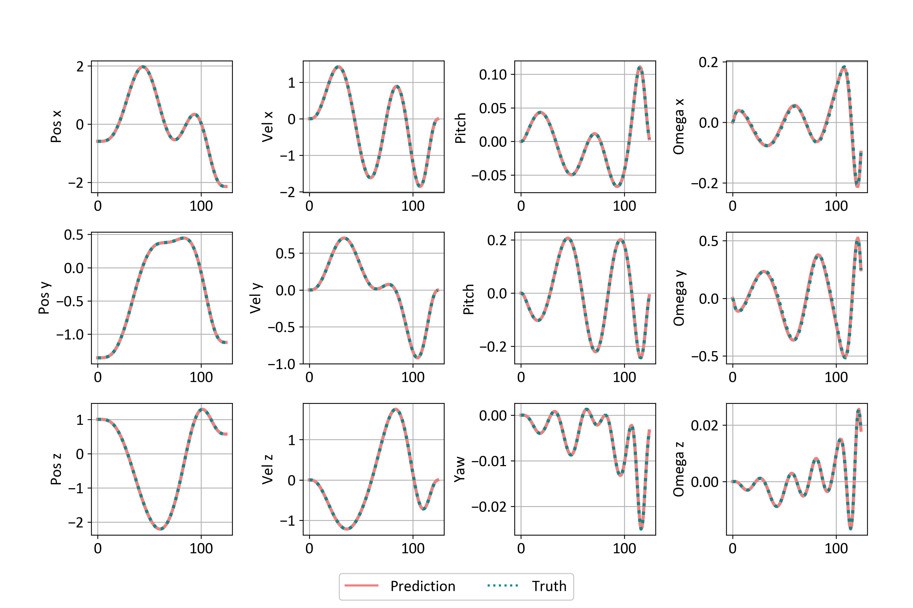
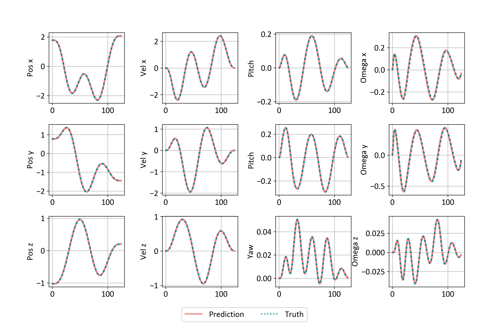
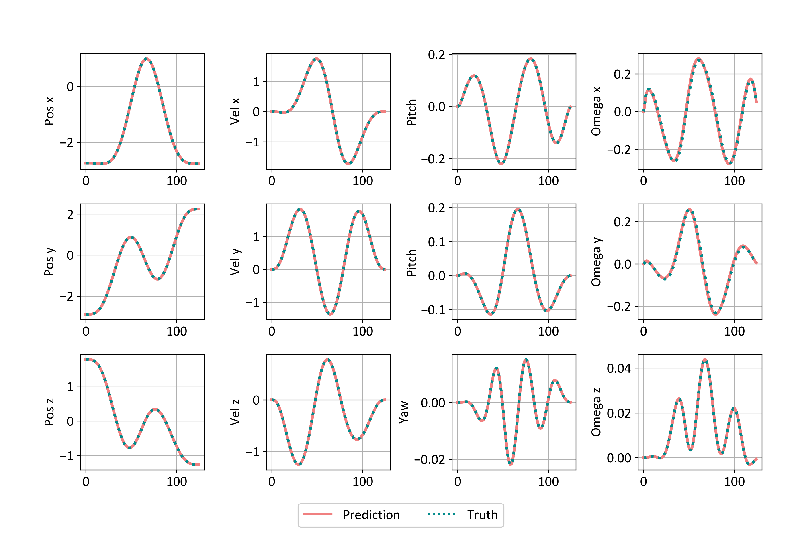
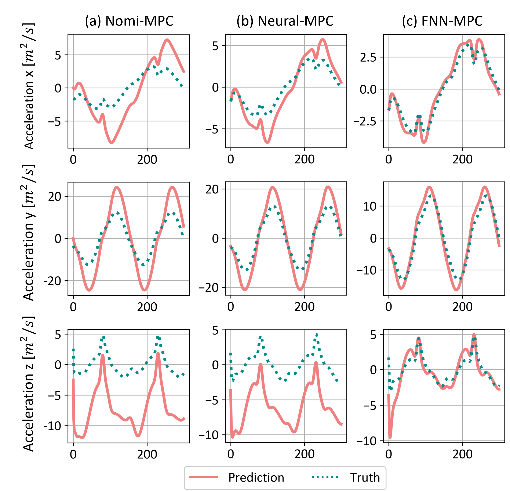